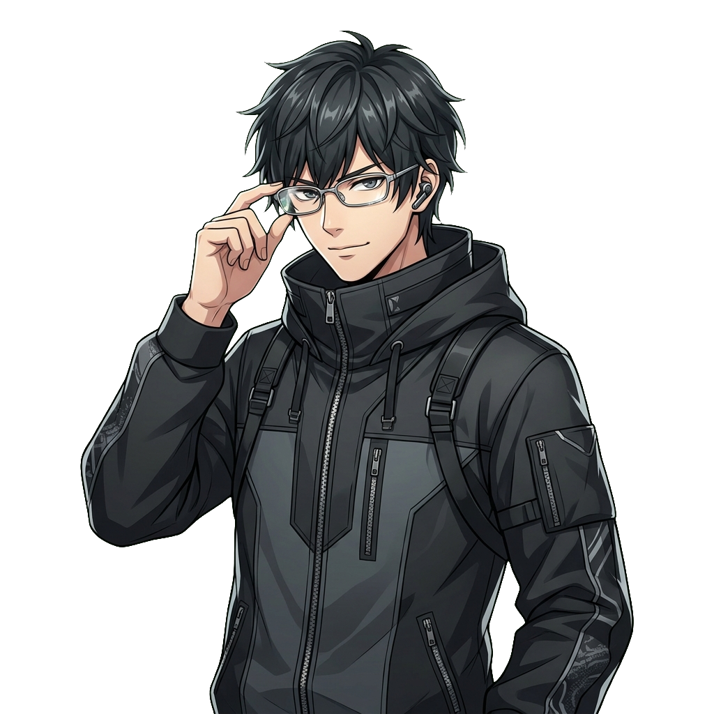
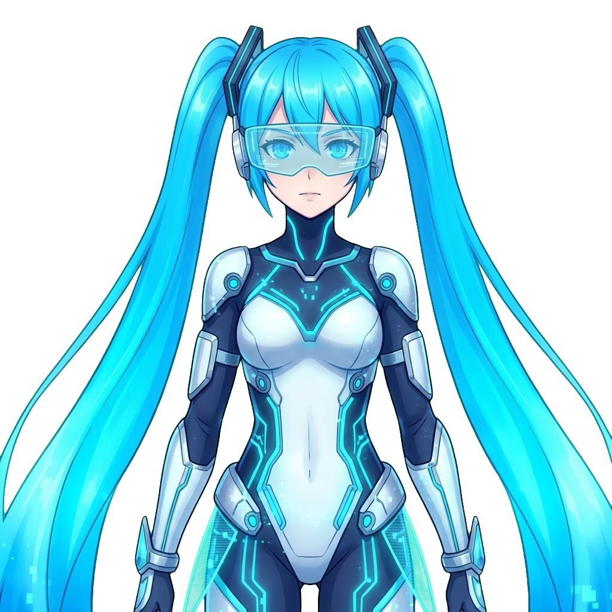
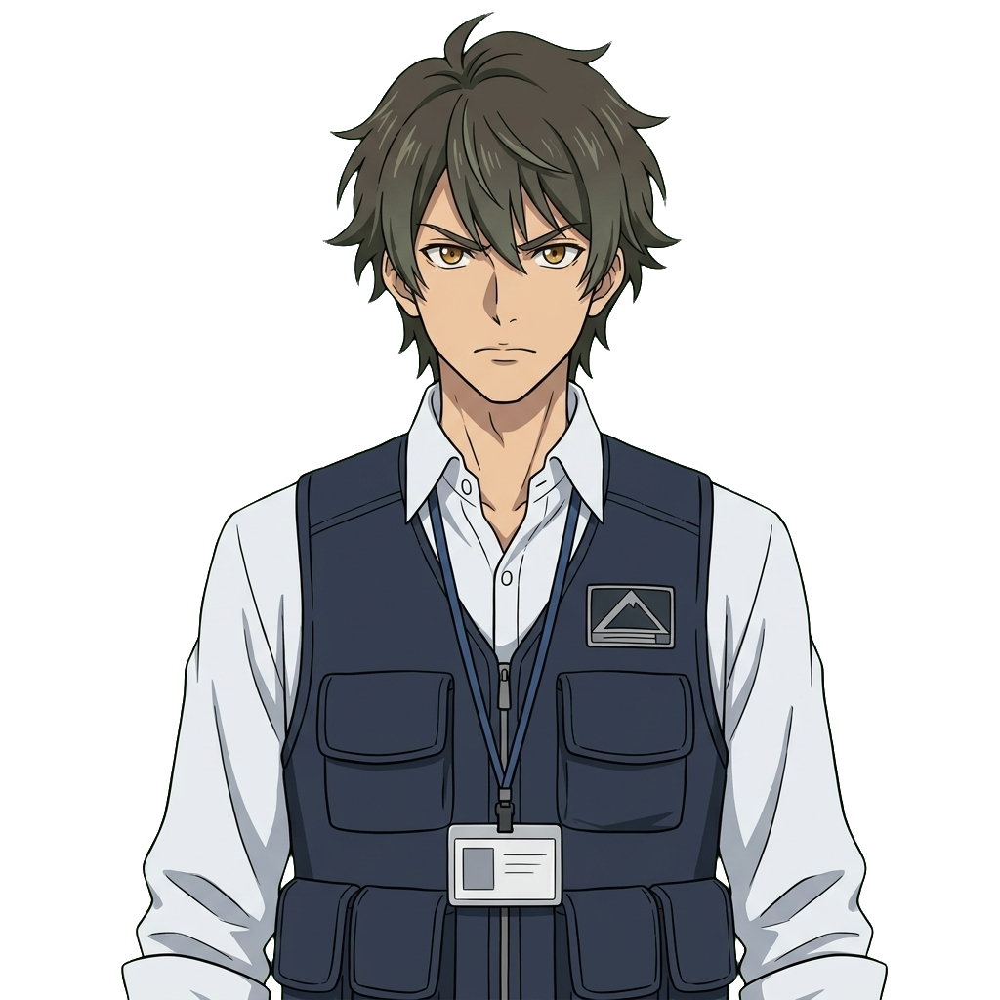
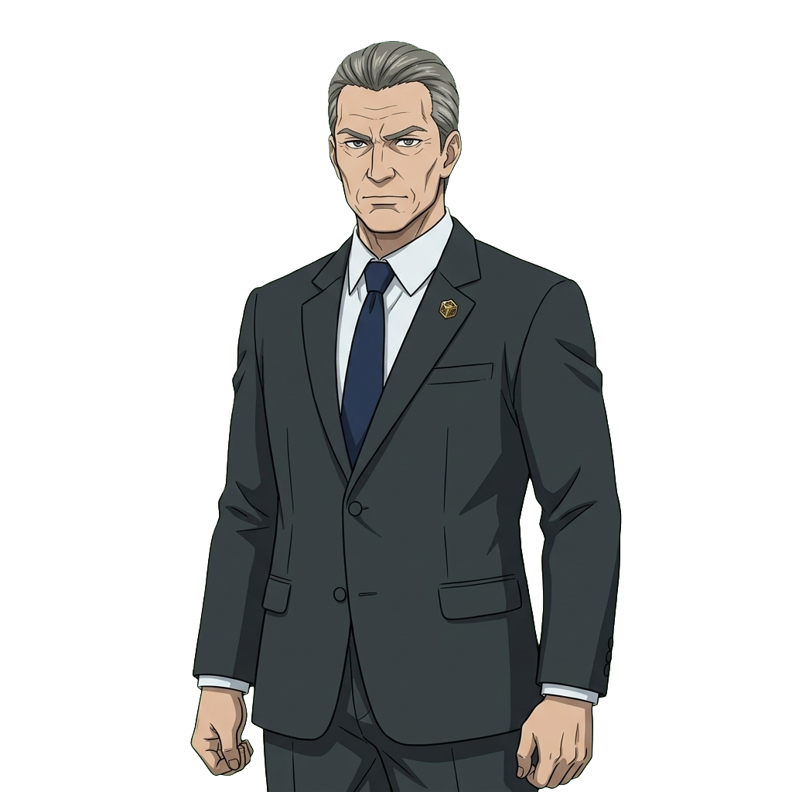
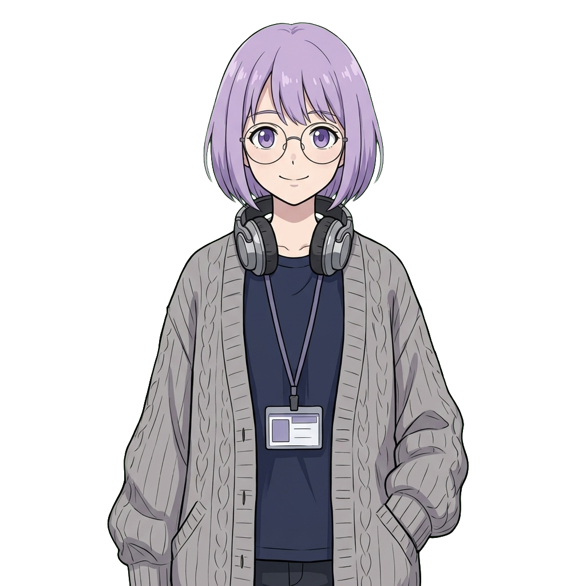

次世代音声合成モデル「Gemini 3.8 Flash TTS」を活用したキャラクターボイスおよびナレーションの全ラインナップ。
各キャラクターごとに異なる声質・演技トーンのサンプル（各4候補）を生成し、本編実装に向けた比較・選定が行えます。





speech_metadata.style パラメータに各キャラクターの感情・状況・発話速度・年齢感を詳細に指定し、高精度な日本語演技を実現。